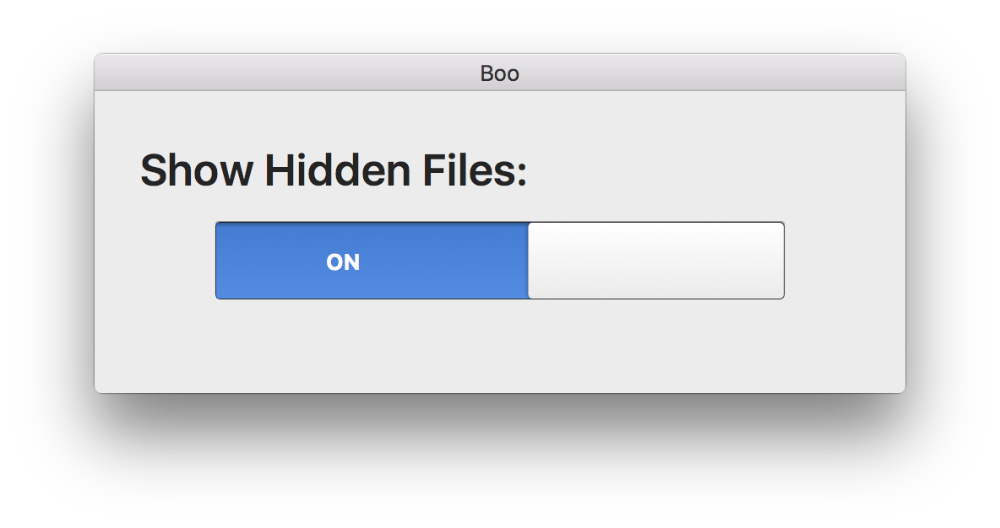

How many times have you googled Show hidden files on terminal?
In case you’ve arrived here because of this search, help yourself...
defaults write com.apple.finder AppleShowAllFiles YES or NO
Otherwise...
Better call Boo!
Whenever you want to show the hidden files of your system just use Boo.

Boo simply calls this basic command for you.
Sometimes you need access to the hidden files, well, Boo makes this calls to the terminal for you… Spooky!
Enable or disable the visibility of the files with a simple swipe
It will safely display or hide your files. It uses native commands from OSX. No harm!
